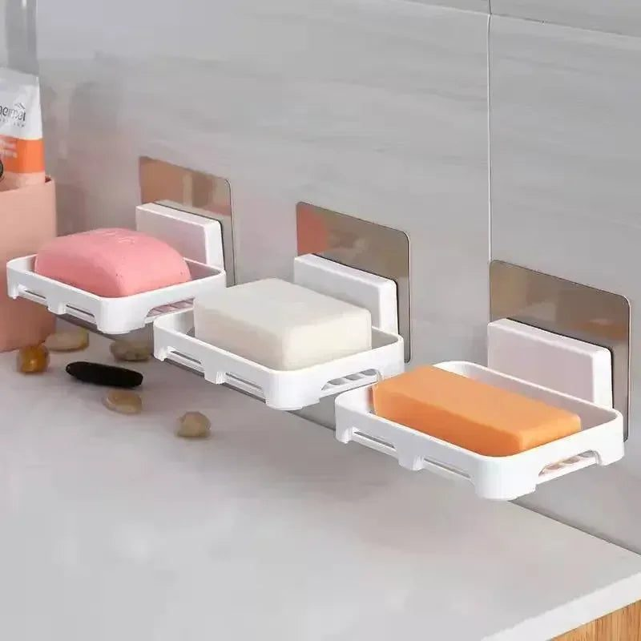

- The day before: deep clean
- Hand washing essentials
- Wudu-friendly setup
- A tidy vanity
- Freshness without overpowering
- Small extras guests appreciate
- Think about elderly and young guests
- During the dawat
- No-drill solutions for rentals
- Stocking up
- The detail guests notice
When guests come for a dawat, most of the preparation goes into food and the drawing room. The guest washroom often gets a quick wipe at the last minute. Yet it is one of the rooms every guest uses, often more than once, especially when they come to wash hands before and after a meal or to perform wudu for prayer.
A clean, well-stocked guest washroom shows care and saves guests from awkward moments. Here is a checklist.
The day before: deep clean
- Scrub the toilet, basin and floor thoroughly, including corners and behind the commode.
- Clean the mirror and taps until they shine; water spots are very noticeable.
- Wash the bath mat and hand towels.
- Check that the flush, taps and muslim shower work properly, and fix any drips.
- Empty and wash the dustbin.
Doing this a day ahead leaves only a quick refresh for the day of the dawat.
Hand washing essentials
Guests will wash hands before and after eating. Make it easy:
- A full liquid hand wash dispenser, or a fresh bar of soap in a clean soap dish with a lid or drainage so it does not sit in a puddle.
- Plenty of hand towels, or a stack of small towels or tissue so each guest can use a fresh one.
- A bin with a liner for used tissues.
For large gatherings, set up an extra hand-washing station outside or near the dining area, with soap, water and towels, so the washroom does not get a queue.
Wudu-friendly setup
Many guests will pray during a gathering, especially if it spans Maghrib or Isha. A lota or a working muslim shower, a dry mat to stand on and a towel make wudu comfortable. Keep the floor dry between uses with a mop or squeegee close by. Point the way to a prayer space and prayer mat in another room.
A tidy vanity
Remove family toiletries, toothbrushes and personal items from the counter. Put them away in a cabinet or a basket. A vanity tray holding only a hand wash, a small air freshener and perhaps a small plant looks neat and intentional.
Freshness without overpowering
A light air freshener or a reed diffuser keeps the washroom pleasant. Avoid very strong fragrances, which some guests find uncomfortable. Keep the window open or exhaust fan running, and make sure the room is well ventilated.

Small extras guests appreciate
- A spare toilet roll in plain sight.
- A small mirror at a sensible height for adjusting dupattas and hijabs.
- A few hair pins and safety pins in a small dish.
- Slippers at the door if the floor may be wet.
Think about elderly and young guests
Older relatives may find a slippery floor or a low commode difficult. Keep a non-slip mat by the basin, make sure the light is bright enough and clear any clutter from the floor. For families with small children visiting, a small step stool near the basin helps them wash their hands independently, and keeping cleaning products locked away or out of reach is essential.
During the dawat
Ask a family member to check the washroom every hour or so during long gatherings. Wipe the basin and floor, replace towels and refill soap. Quick checks keep it fresh until the last guest leaves.
No-drill solutions for rentals
If you rent, adhesive soap holders and no-drill hooks let you add storage without damaging tiles. They are inexpensive and easy to remove when you move.
Stocking up
If your soap dish is cracked or the vanity looks bare, it is worth replacing a few basics before the next gathering. The bathroom essentials range at Trenducts.pk includes soap dishes with lids, vanity trays and no-drill holders, with delivery across Pakistan.
The detail guests notice
Guests rarely compliment a washroom, but they always notice one that is not ready. A clean, well-stocked space completes the hospitality your family offers and lets everyone relax and enjoy the evening.